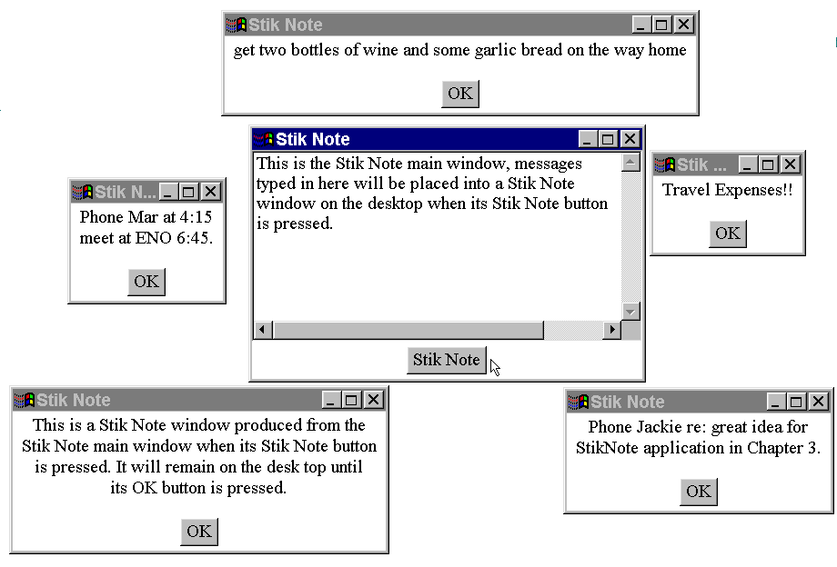
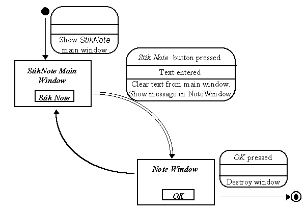

The visual appearance of the StikNote application is shown in Figure 3.1.

Figure 3.1 The StikNote application.
The StikNote application main window is shown in the middle of the figure and can be identified by the button labeled "Stik Note" at the bottom. All of the other windows are NoteWindow windows containing various notes produced from the main window. When the "Stik Note" button on the main window is pressed the contents of the text area above the button, if any, are transferred to a new NoteWindow window. A NoteWindow will remain visible until its "OK" button is pressed, when it will be destroyed.
One other consideration of the visual appearance of the application is not shown on this illustration. The real world sticky notes are most commonly yellow, in order to take advantage of this association in the user's mind the background of all windows in the application is yellow and to make sure that the text is readable it is displayed in blue using a large font.
Design Advice
Take advantage of the user's prior experience by making the appearance and behavior of an application as similar as possible to their expectations.
A STD design for this application is given in Figure 3.2.

Figure 3.2 StikNote State Transition Diagram.
The initial transition, at the top of the diagram, indicates that the StikNote Main Window will be shown when the application is started. The single control, the Stik Note button, will only cause a transition to be followed if the user has entered some text into the text area part of the main window. The artifact has no terminal state and so no terminal transition.
The doubled lines on the main window's only transition indicate that every time the StickNote button is pressed, if there is any text in the Main Window, a new Note Window will be created containing the text from the main window. The action part of the transition label indicates that the text will also be cleared from the text area part of the main application window as the transition is followed. The unlabelled transition back from the Note Window state to the StikNote Main Window state indicates that after creating an instance of the Note Window the artifact will automatically return to the StikNote Main Window state. Each Note Window also has a single transition, which is taken every time its OK button is pressed and will cause the Note Window to be destroyed leading to its, but not the artifact's, terminal state.